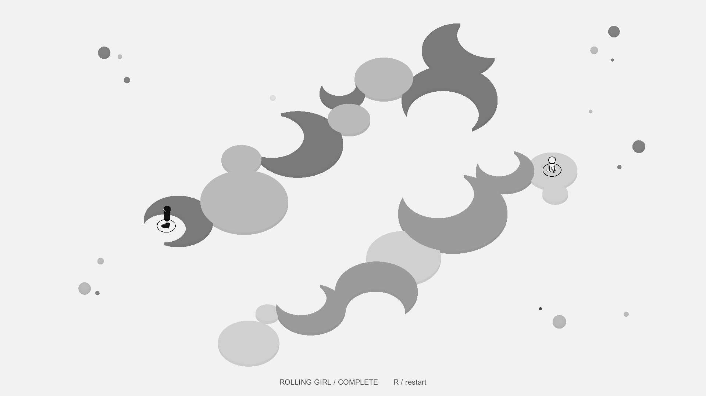

Spatial puzzle
Sleepwalk
Find a shared path through reflection, inversion, and shifting perspectives.

Overview
A spatial puzzle project built around paired characters and changing geometry. Paths are made from simple graphic forms, but moving through them depends on understanding how the two sides of a space relate to one another.
My contribution
- Developed spatial puzzles around paired movement, supported surfaces, and reversible transformations.
- Iterated on goals and interaction feedback through playtesting.
- Worked on endings that transform the completed level geometry into a final composition.
The surface is the interaction
In the Rolling Girl level, both characters must stand on eligible paired surfaces before those surfaces can turn. The same shapes are both the route and the mechanism, making position part of every decision.
Feedback without giving away the route
An occupied turning face gently darkens. An unavailable action makes the occupied surfaces briefly shake. These responses communicate what the space allows while leaving the sequence for the player to discover.
A level becomes an image
The ending begins with the completed map. Its existing circles and crescents rotate and rearrange into a final illustration, connecting the puzzle's physical structure with its visual payoff.